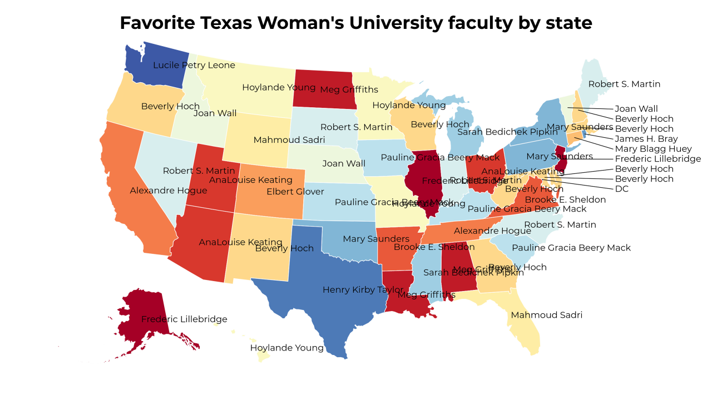
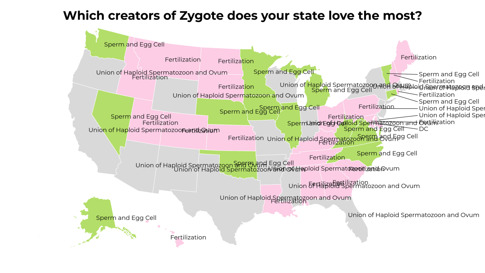

-
Favorite Texas Woman's University faculty by state
-
Favorite instances of Division by state
-
Favorite Chinese women poets by state
-
Which creators of Zygote does your state love the most?
-
Favorite things Republican is a part of by state
-
 What do the states think of proles?
What do the states think of proles? -
Favorite Bronze Age sites in Syria by state